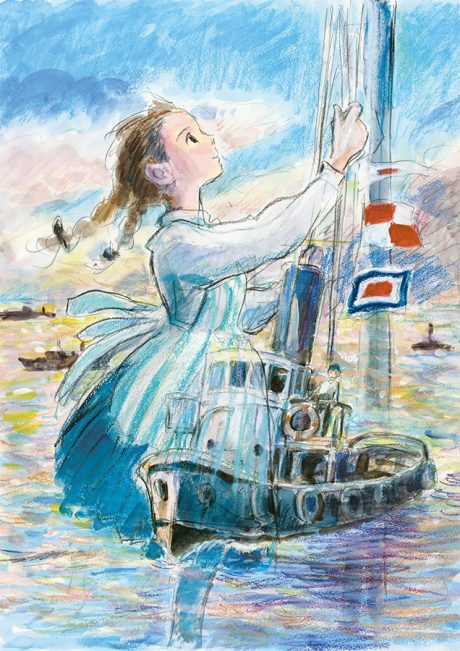
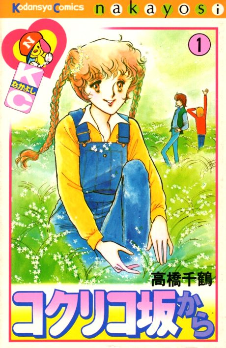

From Up on Poppy Hill
コクリコ坂から
The anime takes the story to Film.
7.5AniList score
—Animeter, no votes yet
1film
Anime finished. Where does the manga pick up?
StatusFully adapted
The film is based on the short 1980 manga by Chizuru Takahashi and Tetsuro Sayama. The manga tells the same story, so there is no continuation after the film.